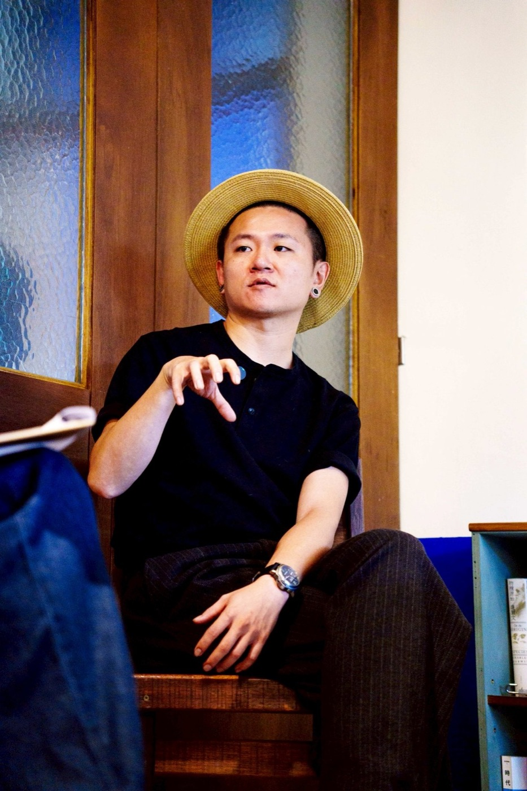

餐飲策略・品牌・料理研發
把餐飲的想法，
做成能經營的品牌。
Jeff 同時具備顧問、主廚與經營者的實戰經驗——不只是給方向，而是陪品牌把判斷做到菜單、現場與每一次出餐裡。
餐飲策略・品牌・料理研發
Jeff 同時具備顧問、主廚與經營者的實戰經驗——不只是給方向，而是陪品牌把判斷做到菜單、現場與每一次出餐裡。
你的狀況，可能是這樣
想開店，但定位、商品與預算還沒有對齊。
餐廳已經營運，卻說不清品牌差異。
品牌想成長，但菜單、體驗與現場無法一起前進。
我們先找出真正的問題，再決定需要做多少。
SELECTED CASES／顧問案例
同樣是菜單、品牌或行銷，面對不同場域與經營條件，需要的答案並不相同。傑弗德先釐清真正限制品牌成長的問題，再決定應該調整什麼、保留什麼，以及哪些事情此刻不該做。
OWNED BRANDS／自有品牌
臺米以雲林風土為核心，透過不同餐飲形式持續驗證料理、品牌與營運判斷。
關於 Jeff

Jeff 具備澳洲行政總廚、奇美食品體系及自有品牌經營的完整歷練——從研發、出餐現場到品牌經營，每個判斷都經過真實營運檢驗。
這份經驗讓傑弗德的顧問建議不停在策略文件，而能一路陪品牌走到菜單定案、現場教育與開幕後的營運陪跑。
數字依歷年專案紀錄與實際投入內容回推統計。
合作會怎麼開始
了解品牌現況、門店規模與目前遇到的主要問題。
把問題壓縮成可執行的方向，確認合作範圍與時程。
從策略到菜單與現場，逐步驗證判斷是否成立。
依實際執行結果調整，並視需求延續陪跑。